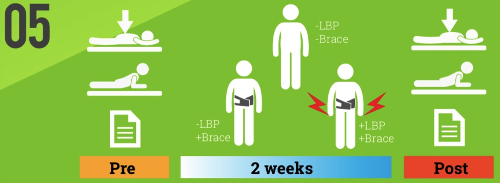

01 Introduction
A recent province-wide survey (Alberta, Canada) suggests that clinicians’ beliefs about soft lumbar bracing for low back pain (LBP) vary substantially1. Approximately 50% of clinicians (MDs, DCs, PTs) find back braces "useful" for acute back pain while the remaining half feel that acute bracing "causes muscle atrophy".
While a previous MRI investigation has shown that two weeks of soft lumbar bracing does not alter lumbar muscle volume2, this current study was designed to determine if muscle function changed over a two week period of soft brace wearing.
~50% say braces are "useful" ~50% say braces "cause atrophy"
02 Subjects
Three groups were studied: asymptomatics who did not wear a brace (-LBP, n = 19), asymptomatics who were braced (-LBPbr, n = 18) and LBP subjects who were braced (+LBPbr, n = 17).
03 outcome measures
Spinal Stiffness (N/mm) Modified Sorenson’s Test (s) Oswestry Disability Index (ODI)
04 methods
Both groups of braced subjects (-LBP/+Brace; +LBP/+Brace) were in- structed to wear the brace continually for 2 weeks with the excep- tion of bedroom & bath- room time. Before and after the 2 week period, 3 measures of spine function were per- formed: spinal stiffness via motorized indenta- tion, a modified So- rensen test (timed lumbar extension against gravity), and the ODI. Unbraced (-LBP/- Brace) subjects were
studied over the same time with the same measures.

06 analysis
Repeated measures analyses of variance were conducted for all three outcomes with a signifi- cance level of 0.05.
07 results and discussion
Within groups, the +LBP/+Brace group demonstrated a sig- nificant decrease in their ODI score (p = 0.003). The –LBP/–Brace group showed a significant increase in their Sorenson endurance time (p= 0.004). Spinal stiffness did not change significantly in any group.
Between groups, ODI change scores decreased significantly for the +LBP/+Brace group (p < 0.001) compared to the other two groups. The +LBP/+Brace group’s ODI score decreased 3.71 points (95%CI 2.01 – 5.40) compared to the –LBP/–Brace group and decreased 3.48 points (95% CI 1.77 – 5.20) compared to the –LBP/+Brace group. Change scores for Sorenson's test were significantly increased in the +LBP/+Brace group over the two week period (p = 0.037) compared to the –LBP/–Brace group (22.47s 95%CI 8.14- 36.80).
Similar to prior MRI results that described no change in lumbar muscle volume after two weeks of lumbar bracing, this study demonstrates that lumbar function does not worsen in similar bracing conditions. These data add to a growing body of knowledge that suggest soft lumbar brac- ing is not harmful for short-term use in acute LBP.
08 reference
1. Kawchuk, Edgecombe, Birchall. Beliefs of Alberta clinicians re- garding lumbar bracing for acute back pain.
2. Kawchuk, Carlson, fowler, Ga- brush, Gibson, McLearen. The effect of lumbar bracing on back muscle cross-sectional area. In submission.
09 thank you
To RiverValley Health for the clinical space and to Aspen Medical Products who supplied braces and trainee sup- port
10 take home
1) Worn over 2 weeks, back braces do not cause loss of function. 2) For acute LBP, back braces can be used with precautions similar to CRUTCHES for short-term assistance with mobility.
11 contact

Like to talk?
Let’s meet in Seoul!
Greg Kawchuk
greg.kawchuk@ualberta.ca